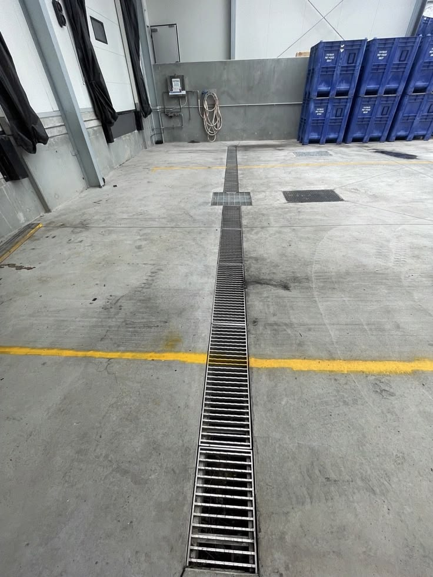
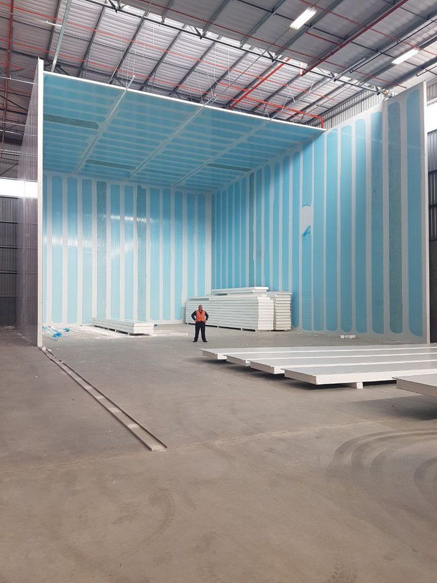
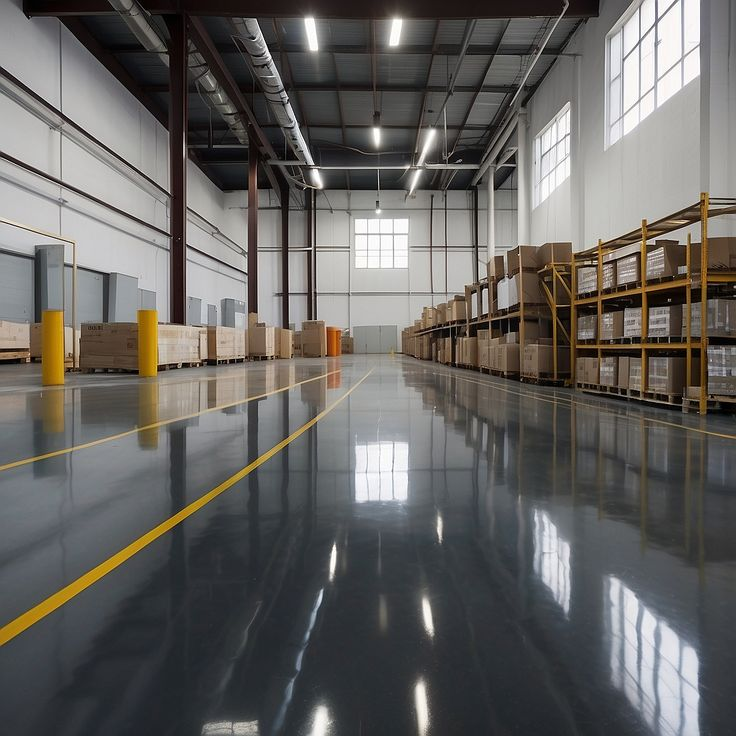
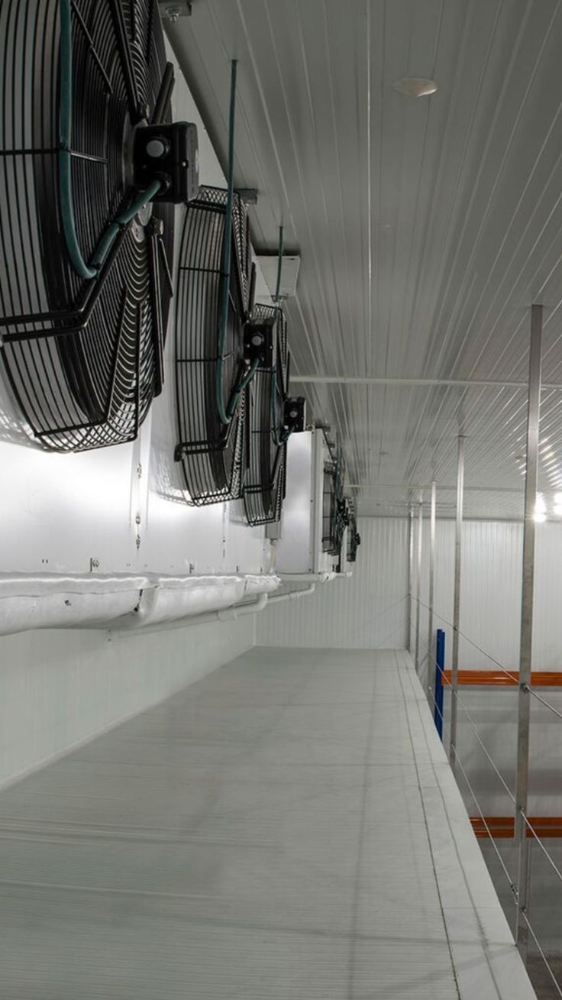
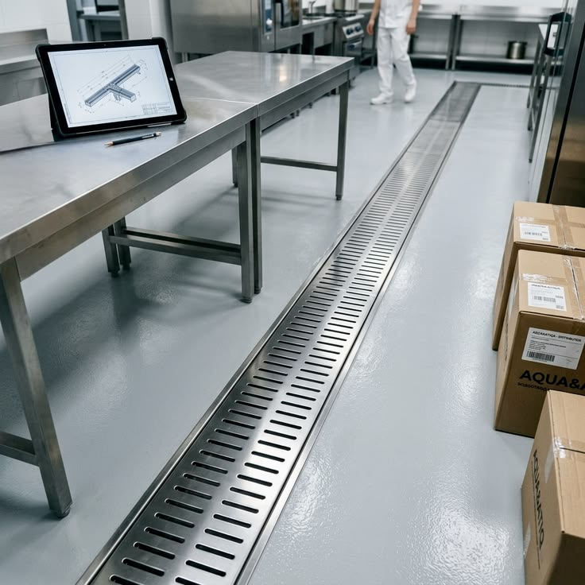
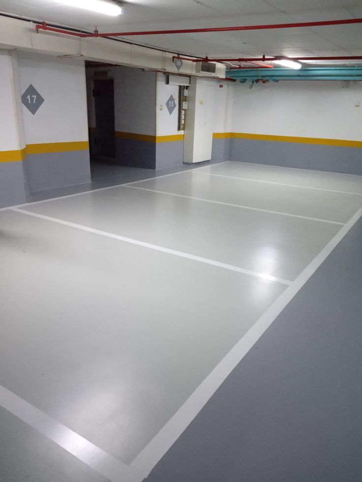
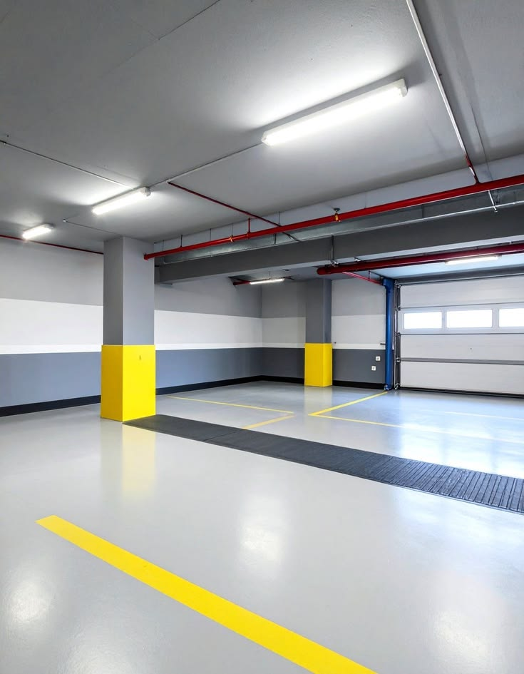
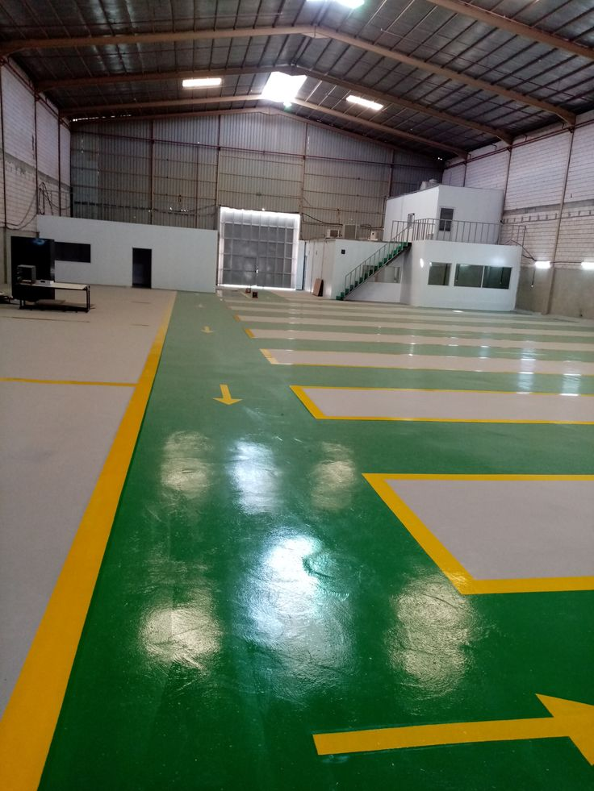

01
Hygienic Industrial Flooring
Resinous flooring systems are selected according to service conditions.
- Epoxy, polyurethane-cement or suitable resin systems
- Floor-to-wall coving
- Substrate repair before coating
- Falls toward drains

We improve industrial environments as one coordinated system.
Industrial fit-out must respond to workflow and real operating conditions.
Our physical works can be planned to support GMP and HACCP readiness.
The right solution coordinates finishes and services as one system.
Resinous flooring systems are selected according to service conditions.
Washable and maintainable surfaces improve cleanability.
Drainage is coordinated with flooring and wash-down needs.
Custom stainless fabrication is developed around the process.
Cold areas are coordinated around temperature and insulation continuity.
Ventilation is coordinated with process loads and environmental conditions.
Lighting is selected according to the activity and environment.
Insulation details are coordinated with the operating environment.
GMP readiness depends on the facility working as a complete system.
Controlled facility flow.
Practical cleanability matters.
Hand hygiene stations are integrated with the workflow.
Avoid persistent standing water.
Control heat and moisture loads.
Lighting must suit the production zone.
Design for maintenance from the beginning.
Details should not become contamination traps.
Stainless steel details should match the cleaning task and workflow.
Material grade is selected according to the real exposure conditions.
Single or multi-user hygiene stations.
Designed around the actual washing task.
Details designed for easier cleaning.
Custom fabricated around the space.
Industrial environments and coordinated systems.









Share the operating requirements and we can define the suitable scope.